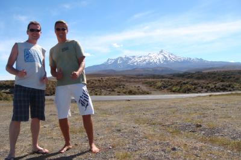

01 July 2009
I think I ask myself this every time I spend time back in New Zealand. Admittedly, I'm seeing it at it's best. Normally Christmas and New Years through to the start of Autumn. But this time was even more difficult. And I was the closest I've ever come to returning permanently. I don't even fully know why not. Perhaps I'm scared of such a big change? Weird, or what?
Something nice happened on the way to New Zealand though. I got upgraded to First Class. Never flew First before and I've got to admit, it's pretty nice. Only problem is, I was so excited about it, I couldn't sleep. Thank you Emirates! That was awesome...
Had a great New Year's party at Murawai with friends. The house was incredible, loved the beach, the people were amazing. And once again I realise my deep love for the sea. That's something I really miss when I'm living in Cheltenham. (Yes, I know I'm on an island, but I do feel a long way away from nice beaches, let alone decent weather)
After Auckland, Henning and I drove down to Wellington to stay with Mike & Brenda. I couldn't turn down the opportunity of going kayaking with them for a week around Kenepuru and Pelorus sounds.

The DoC campsites were lovely spots. And we were fairly lucky with the weather. Got a bit threatening the day we paddled to the Portage (where Mike and Brenda got married). But the worst we got were some sizeable swells. Sure, it made it hard going at times... but it was possible to surf as well, which was pretty cool!
Had quite a few other events. My sister's 21st, Grandma's 84th. Was nice to spend time with family again. I spent a bit of time up north at Mum's, just enjoying the slower pace of life, managing to get back up to Cape Reinga & Te Paki with Sarah and Lily.
I've got a few regrets from that trip, but one of them was a painting I'd seen in a gallery. I don't often see paintings I really like, but this one was something special.
I wish I'd bought it at the time. I think the only reason I didn't, was something to do with the frame. It was handmade and looked a bit rough, but I really do regret not getting it now.
I did enjoy seeing a side of Auckland that I'd not seen before. Really had some amazing food and it's nice to see somewhere through someone else's eyes. I'd fallen a little more in love with the city.
But again, all too soon, I found myself back in the UK...
Shortly after returning to the UK, Liezl and I got back together. (Yes, 20/20 hindsight and all that... Hey! It could have worked maybe...)
I had various clients, so always had work on, but fortunately was able to travel still, so our first trip together was back to the Philippines.
I absolutely love Boracay. It's only the second time I've been here and I so didn't want to leave! After spending a few days in Manila first, we headed out to Boracay to stay at 7 Stones Boracay.
Days were mostly swimming, eating, walking and relaxing. Then in the afternoon/early evening, I'd crank out a bit of work, sitting at the bar (the only spot I could get fast wireless) before heading out to dinner and drinks.
But the most amazing thing was just wandering out into that gorgeous warm water. I honestly couldn't imagine anywhere else that I'd rather have been.
After Boracay, we headed back to Mabitac briefly before heading away to Panglao, Bohol. We'd been offloaded on the way to Boracay, so we'd been given complementary flights (but had to use them within 12 months) so we decided to go on another beach break.
Panglao is far less touristy than Boracay and in some ways I preferred it. Sure, it's not quite as stunningly beautiful, but there's something nice about being able to walk around without being pestered for jet-boat, diving or sailing every 30 metres.
Hired a motorbike while we were there. I loved the process. Wander over, ask how much. Look over the bike, shake the guys hand and he gives you the bike and keys. Perfect! Can't think of too many places where it's that relaxed.
Only problem with getting a bike over a scooter, is jandals (flip-flops/tsinelas) aren't really ideal footware for changing gears. But I couldn't quite bring myself to hiring a scooter for some reason... Maybe because of the mileage we wanted to do. Needed to head to Baclayon on the main island of Bohol. But also wanted to properly explore all of Panglao.
On one of our random explorations, we found a group of shops down a side road. It started to rain so we grabbed some food and took shelter. Over to my left, I see some steps leading down into the ground. Wandering over I discover we're at Hinagdanan cave. So I've got to head down and have a look. At least it explained all those random shops down the dead-end road.
The cave was really neat. Holes in the roof, tons of bats, a lake of cool inviting water in the middle. Shortly after I'd entered the cave a few kids came down and jumped in the water. Not something you'd be able to do in a western country at a tourist destination I think (damn Health and Safety). So I jumped in as well. Was lovely and refreshing!
Also went on a boat ride to go dolphin watching and snorkling. I felt like we were harassing the dolphins, so just asked our boat captain to hang back. But there were a ton of boats out there all trying to be almost on top of the dolphins. Just felt wrong, so got him to take us to the coral reef near a small island. Tried circumnavigating the island, but ended up cutting through it at one point. Don't think it was more than a couple of kilometers around. Great place to explore!
Spent almost another week in Manila after Bohol. Something that sticks in my memory was seeing a family asleep in a bicycle sidecar on the side of a very busy main road..
Very very sad...
For my birthday, I found a 'Too good to turn down' deal in Turkey. Almost booked a holiday in Tunisia, but didn't realise that I'd need a visa since I've still only got my New Zealand passport. Trap for young players! So ended up going to Side instead.
The resort we stayed at was gorgeous. There was one other British couple who were staying there. They'd had some problem with their room, so we waited while they got sorted. I'm not sure if they upgraded us because we'd just chilled out while this other couple were making a fuss, but the room they gave us was enormous. Possibly one of the best places I've ever stayed.
In the morning, it was our first introduction to the breakfast buffet. I've never seen so much food! The resort was mostly full of Germans and Russians - and they were packing the food away with a vengeance. I think I must have gained a few kilos from the breakfasts and dinners alone!
Managed to get out and explore quite a lot. Went on a neat boat trip around a few islands and a little way up Manavgat river. Saw a lot of sea life, along with a ton of other boats. I think ostensibly we were meant to go dolphin-watching again, but after my experience in the Philippines, I'm glad we didn't see any. That said, it felt a lot more chilled out and better managed, so might have been a much nicer experience.
I went to a proper Turkish Bath (Hamam) which was a neat experience. Also had a go at some proper archery, which I loved. Had a little competition against the instructor, which I won. Felt pretty chuffed about that. Definitely something I'd like to do more of! Also played a lot of beach volleyball with the Germans. That was good fun!
Wandered off to Manavgat on our last day/evening. Felt so much nicer and more authentic that Side, which is more of a touristy sort of place. Had the most amazing food once again. Afterwards, when we returned to the hotel, caught up with the British couple we'd met as we arrived. They hadn't left the place at all in the entire week. Madness!
Next travelogue will have the second half of 2009.